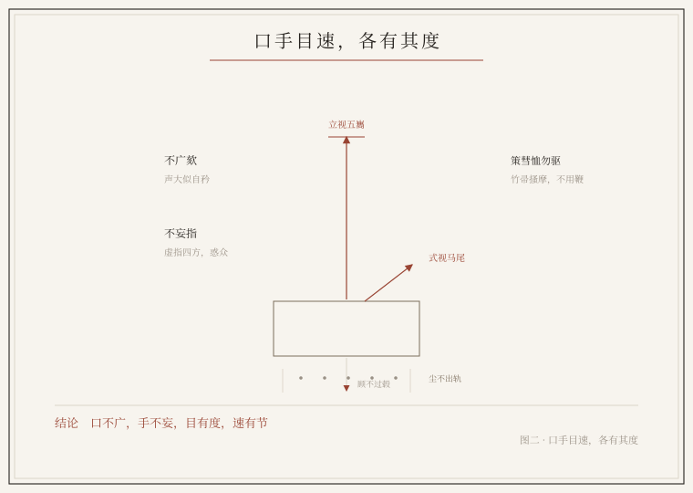

曲礼上 · 一·一百二十四 · 第 122 课
车上不大声咳，不胡乱指点；立乘则平视前方五巂之远，凭式则只看马尾，回头不过车毂；在国都之中用竹帚搔摩马身、缓缓而行，使尘土不出车辙。
说什么事：车上不广欬，不妄指。立视五巂，式视马尾，顾不过毂。国中以策彗恤勿驱，尘不出轨。
落在哪一层：仪，兼及礼意。讲的是「视线」与「速度」。
为何编在此位：上节论向背，此节论目光与行速。身既正，目乃有度。
【经】車上不廣欬，不妄指。立視五巂，式視馬尾，顧不過轂。國中以策彗恤勿驅，塵不出軌。
【注】廣猶弘也。為惑眾。立，平視也。巂猶規也，謂輪轉之度。小俯。為掩在後。彗，竹帚。恤勿，搔摩也。
广欬 注「广犹弘也」。疏「车已高，若在上而声大咳，似自骄矜，又惊众也」。
妄指 注「为惑众」。疏「妄，虚也。在车上高，若无事，忽虚以手指麾于四方，并为惑众也」。
五巂 注「巂犹规也，谓轮转之度」。疏「车轮一周为一规……总一规为一丈九尺八寸。三规为九十九尺，六尺为步，总为十六步半」。
式视马尾 注「小俯」。疏「马引车，其尾近在车栏前，故车上冯式下头时，不得远瞩，而令瞻视马尾」。
顾不过毂 注「为掩在后」。疏「若转头不得过毂，过毂则掩后人私也」；引《论语》「车中不内顾」。
策彗恤勿 注「彗，竹帚。恤勿，搔摩也」。疏「入国不驰，故不用鞭策，但取竹帚带叶者为杖，形如扫帚」；「以策微近马体，不欲令疾也」。
尘不出轨 疏「轨，车辙也。车行迟，故尘埃不起，不飞扬出辙外也」。
车上不声大咳，不胡乱指点。立乘时平视前方约十六步半之地，凭式时只看马尾，回头时不越过车毂。在国都之中用竹帚搔摩马身缓缓而行，使尘土不飞出车辙。
一节四事：口、手、目、速。口不广，手不妄，目有度，速有节。四样合起来，是一个人在高处时如何不失态。
第一层 不广欬 注以「似自骄矜」为说。站在高处大声一咳，未必有意，而形似自矜。
第二层 不妄指 疏「虚以手指麾于四方」。在车上乱指，看的人不知道你在指什么，只知道你在指——惑众。
第三层 三视之度 立视五巂（远），式视马尾（近），顾不过毂（不越后）。视线有三重限制，各有其数。
第四层 尘不出轨 不是不许快，是不许扬尘及人。疏把它与「入国不驰」连起来读：不用鞭，用竹帚搔摩。慢到尘土不出辙，才是真慢。
与今日何干 站在高处的人，声音、手势、目光、速度，都会被放大数倍看。四样都收一收，就是教养。
| 左 | 右 |
|---|---|
| 不广欬 | 声大似自矜，又惊众 |
| 不妄指 | 虚指四方，惑众 |
| 立视五巂 | 平视十六步半 |
| 式视马尾 | 小俯，不得远瞩 |
| 顾不过毂 | 过毂则掩后人私 |
| 策彗恤勿驱 | 竹帚搔摩，不用鞭 |
| 尘不出轨 | 行迟，尘不飞扬出辙 |
画一辆车与三条由车心射出的视线：一条长线向前平伸，末端标一小段横线；一条短线向下微俯，止于马尾；一条向后极短的虚线，止于车毂即断。车身下方画两道收窄的车辙，辙内尘土聚成一小撮、未越出辙外。车旁另画一支带叶的竹帚。不画人、不写文字。赭色只用在三视的末端标记上。
